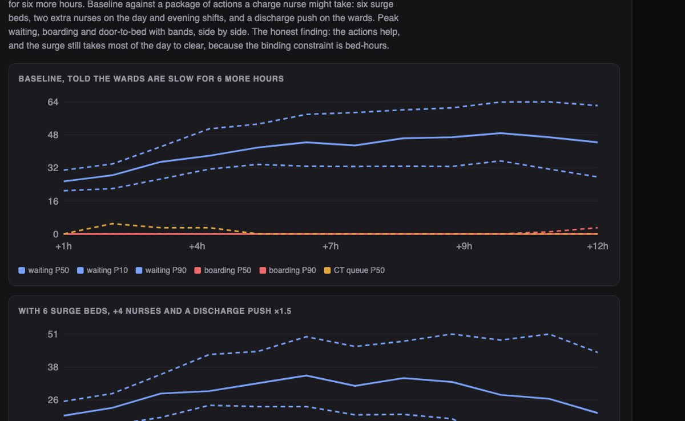
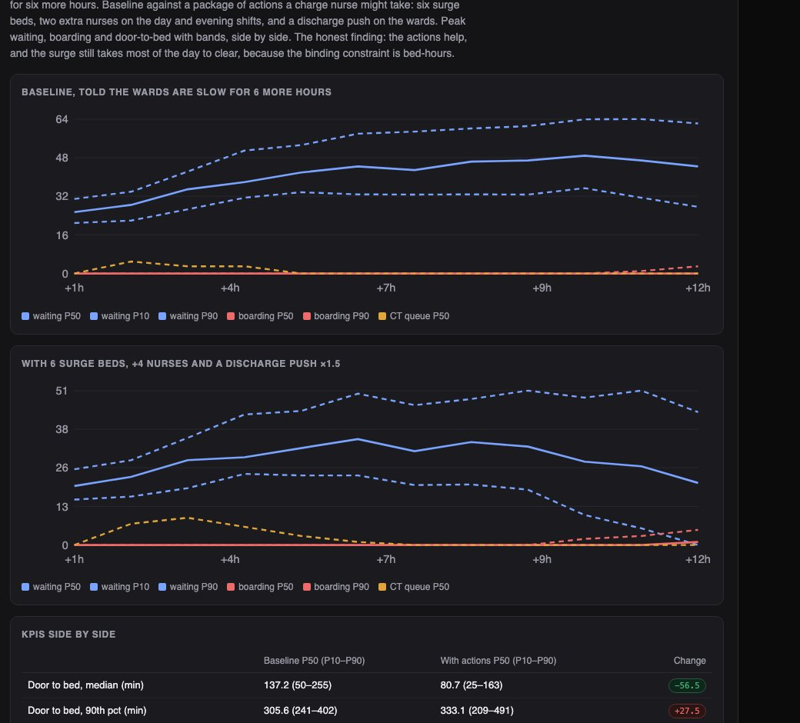
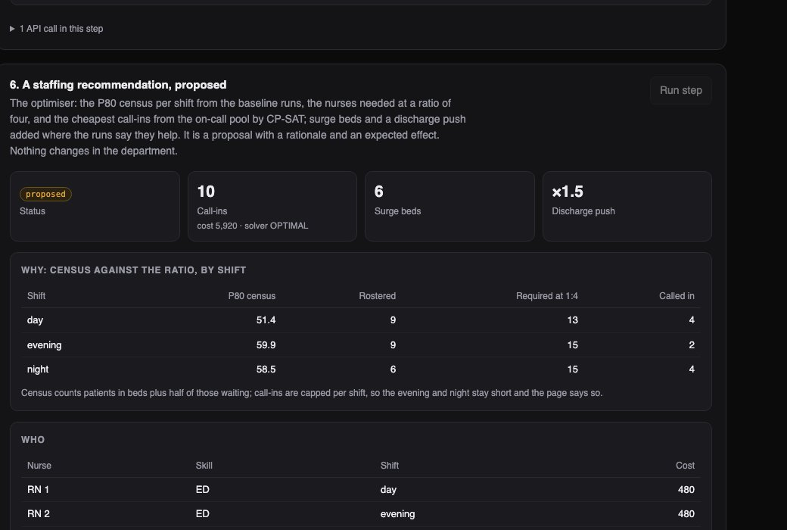

Python · Discrete-event simulation · CP-SAT · 2026-10
How Bad Will the Waiting Room Get?
An operations view over an invented emergency department: arrivals and admissions forecast from its own history, the department run forward many times from its live state, a 30-patient surge with a ward slowdown, and staffing and bed actions simulated (peak waiting 49.5 → 35.5) before a director, never the proposer, approves them.

Built from a written blueprint as one vertical slice. The department is simulated: patients, staff, beds and the sixteen weeks of history come from a discrete-event generator in the repository, and the demo's surge is injected by telling the generator what happens, which is what lets every forecast be checked against the truth. No real patient data; encounters carry a hashed token and an age band only; nothing here is clinical advice. No language model is used. Not built: HL7v2 or a real EHR, survival models, deep temporal models, a twin that differs from the generator, Kafka, Terraform, single sign-on.
01 — The problem
An emergency department knows it is full; what it needs to know is how full it will be at four o'clock, whether the wards will take its admitted patients, and whether calling in two nurses or opening six beds would change anything. The tools that answer this tend to either hide the uncertainty or act on their own. Can software forecast arrivals and beds honestly, run the department forward with bands, show what each action does before it is taken, and keep a person between the model and the floor?
Blueprint 10 of fifteen in a third build book, built as its demo scenario end to end.
02 — What I built
A Python service on PostgreSQL with a background worker and a web page, started by one docker compose up.
- A discrete-event department: ED beds, two CT scanners, a nurse ratio that slows care, wards that discharge in the daytime.
- Models from its history: an arrival profile with a Poisson band, an admission classifier with a calibration table, a ward turnover, and a length-of-stay model reported as no better than the median.
- A forward simulation from the live state, thirty runs, with announced constraints and approved actions; KPIs with bands, side by side with actions.
- A staffing optimiser (CP-SAT over an on-call pool) that proposes, with rationale and simulated effect.
- Approval by a director who is not the proposer; nothing counts until then.
03 — How it was built
- 01
A department that behaves like one
Arrivals follow an hour-of-day and weekday profile, about 140 a day, with a triage mix; each patient waits for an ED bed by triage then arrival, is treated for a time that depends on triage, imaging and how stretched the nurses are against a 1:4 ratio, and is admitted or discharged. The admitted board in their ED bed until a ward bed frees; wards fill with ED admits and elective cases and discharge mostly between 10:00 and 20:00. Sixteen weeks of this is the history; the demo starts on a Tuesday at 07:00 with eight patients in beds.
stretch = max(1.0, len(in_ed) / (NURSE_RATIO * n)) push(tm + p["treat_min"] * stretch, "dispo", i) - 02
Models that say when they are not better
Fitted on fourteen weeks, tested on two. The arrival profile beats the same hour last week (2.0 against 2.8 an hour) with 84% of hours inside its 80% band. The admission classifier reaches an AUC of 0.78 against 0.73 for triage level alone, with a calibration table on the page. The length-of-stay model has an error of 85 minutes against 85 for the median by triage level, and the page says it is no better rather than hiding the row.
los_report = {"mae_min": ..., "mae_median_by_acuity": ...} # shown side by side - 03
The department run forward, with and without action
From the live state at 11:00, with every bed full and 23 waiting, the simulator runs twelve hours thirty times, told that the wards are slow for six more hours. Baseline against a package of actions: six surge beds, two nurses on two shifts and a discharge push. Peak waiting falls from 49.5 to 35.5 and the median door-to-bed wait from 137 to 81 minutes, and the waiting room is still far from clear at the end: the binding constraint is bed-hours, and six beds add about two patients an hour of throughput. Boarding stays low because the ED itself is the bottleneck.
base = engine.simulate(seed, state, hours, runs, slowdown=slow, actions=approved) with_actions = engine.simulate(seed, state, hours, runs, slowdown=slow, actions=merged) - 04
A proposal, not an action
The staffing optimiser takes the P80 census per shift from the baseline runs (patients in beds plus half the waiting room), the nurses required at one to four, and lets CP-SAT pick the cheapest call-ins from the on-call pool, one shift each and at most four a shift; where the cap bites it reports how many nurses short the shift stays. Surge beds and a discharge push are added where the runs say they help, the whole package is simulated, and the result is a recommendation with a rationale and an expected effect. The department does not change.
mdl.Add(sum(vars_s) + short[s] >= extra) mdl.Minimize(cost + 100_000 * sum(short.values())) - 05
A person between the model and the floor
The charge nurse who proposed the package cannot approve it, and neither can a viewer; an operations director can, and only then do the call-ins become shifts, the surge beds appear on the board and later simulations include the actions. The FHIR adapter at the front door has the same temper: an Encounter without a timezone, with an impossible triage level or outside the arrival window is refused and the refusal is shown.
if rec["created_by"] == ctx.actor_id: raise Problem(409, "self_approval", "the person who proposed a recommendation cannot approve it")
04 — Results
The demo. The department run forward from 11:00 on the surge day, baseline against the package of actions:

The staffing recommendation, proposed with its rationale and the shortfall it could not fill:

On three other simulated departments:
| System | Baseline | |
|---|---|---|
| Arrivals per hour, error | 1.8–1.9 | 2.6 same hour last week |
| Admission AUC | 0.78–0.79 | 0.72–0.75 triage alone |
| ED stay, error (min) | 66–92 | 65–93 median by triage |
| Peak waiting 12 h ahead, error | 6–29 | 6–26 yesterday's peak |
| Surge peak waiting, with the package | 27–33 | 42–45 without |
The arrival and admission models earn their place; the length-of-stay model does not. The forward simulation does not beat yesterday on a point estimate, because a morning says little about an afternoon, and its P90 held the truth 72% of the time; what it adds is a band and a reaction to the live state. In the surge, beds are what help and nurses alone do nothing.
Honest limits. The twin is the generator, so these are the best results a twin could get. One department, no clinical content, no real feed.
Checks. 11 tests, including: the simulator is deterministic and no patient is lost or stranded, a surge raises waiting and the actions lower it, the models beat their baselines where they do and the LOS model is within ten minutes of the median, the staffing solver picks the cheapest nurses one shift each, a FHIR Encounter without a timezone or with an impossible triage level is refused, a proposer cannot approve, a second approval is refused, and one hospital cannot see another's board.
05 — What I'd do next
- A twin fitted to the data rather than borrowed from the generator, with the band widening to match.
- Discharge-readiness survival by unit, which is where the wards' slowdown would start to matter.
- A second site sharing the on-call pool, so the optimiser has a real trade-off to make.